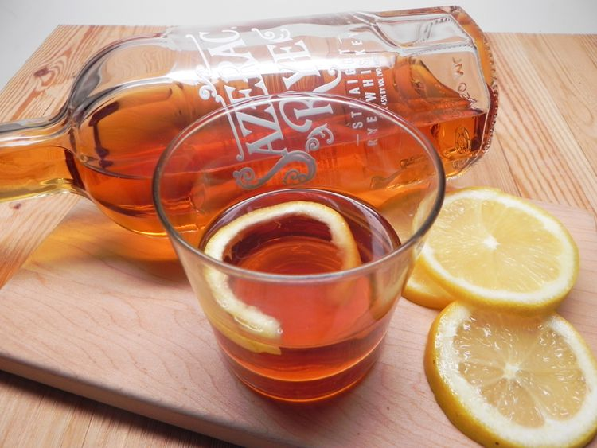

Sazerac

What Is A Sazerac?
The official drink of New Orleans, the Sazerac cocktail is every bit as aromatic and flavorful as most anything else from down on the bayou.
Ingredients
- 2 cups ice cubes
- 3 dashes Peychaud's Bitters
- 2 dashes Angostura Bitters
- 1 sugar cube
- 2 fluid ounces cognac/rye whiskey
- 1 lemon peel
- 1 teaspoon of absinthe
Steps
- Fill a rocks glass with 1 cup ice; set aside to chill, about 5 minutes. Discard ice.
- Place Peychaud's Bitters, Angostura Bitters, and sugar cube in a cocktail shaker and mash well with a cocktail muddler.
- Add remaining 1 cup ice, 1 teaspoon of absinthe and 2 fluid ounces cognac; stir until chilled. Strain into the chilled glass.
- Twist lemon peel over surface of the cocktail to extract its essence; discard lemon peel.